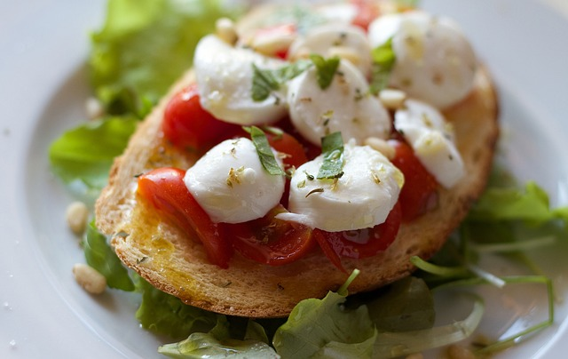

Bruschetta tomates mozzarella
La bruschetta est une préparation culinaire traditionnelle d'antipasti issue du besoin des agriculteurs de conserver le pain, typique de l a cuisine italienne. Originaire de Naples et désormais diffusé dans toute l'Italie et en dehors de ses frontières.
Pour faire une bonne bruschetta, il faut des ingrédients de haute qualité : du bon pain, une délicieuse huile d’olive extra vierge, de l’ail et des tomates bien fraiches. Aujourd’hui, il existe de nombreuses variantes toutes aussi délicieuses les unes que les autres à base de mozzarella, d'artichaut, de parmesan, d’aubergines, de poivrons… et qui régalent les férus d’antipasti.

- Préchauffez votre four à 200°C.
- Couper les tomates en tranches, en retirant les graines et le jus. Versez-les dans un bol avec une cuillère d’huile d’olive, salez, poivrez et mélangez. Égouttez la mozzarella et coupez-la en tranches. Pelez et dégermez l’ail. Hachez les feuilles de basilic.
- Faites griller les tranches de pain sur les deux faces. Frottez-les avec l’ail et arrosez-les d’un filet d’huile d’olive. Déposez dessus une tranche de tomate, puis une tranche de mozzarella en alternance, jusqu’à couvrir chaque tartine. Enfournez 5 minutes environ, jusqu’à ce que la mozzarella fonde.
- Sortez les bruschetta du four. Donnez un tour de moulin à poivre, parsemez de basilic haché et dégustez aussitôt.